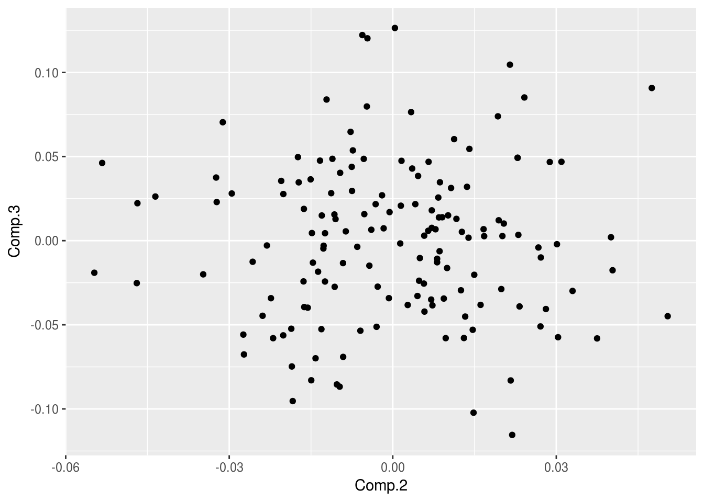

library(ggfortify)## Loading required package: ggplot2head(iris);## Sepal.Length Sepal.Width Petal.Length Petal.Width Species
## 1 5.1 3.5 1.4 0.2 setosa
## 2 4.9 3.0 1.4 0.2 setosa
## 3 4.7 3.2 1.3 0.2 setosa
## 4 4.6 3.1 1.5 0.2 setosa
## 5 5.0 3.6 1.4 0.2 setosa
## 6 5.4 3.9 1.7 0.4 setosapiris=princomp(iris[,-5]);
# print piris summary
piris;## Call:
## princomp(x = iris[, -5])
##
## Standard deviations:
## Comp.1 Comp.2 Comp.3 Comp.4
## 2.0494032 0.4909714 0.2787259 0.1538707
##
## 4 variables and 150 observations.# Check structure of piris
str(piris);## List of 7
## $ sdev : Named num [1:4] 2.049 0.491 0.279 0.154
## ..- attr(*, "names")= chr [1:4] "Comp.1" "Comp.2" "Comp.3" "Comp.4"
## $ loadings: loadings [1:4, 1:4] 0.3614 -0.0845 0.8567 0.3583 -0.6566 ...
## ..- attr(*, "dimnames")=List of 2
## .. ..$ : chr [1:4] "Sepal.Length" "Sepal.Width" "Petal.Length" "Petal.Width"
## .. ..$ : chr [1:4] "Comp.1" "Comp.2" "Comp.3" "Comp.4"
## $ center : Named num [1:4] 5.84 3.06 3.76 1.2
## ..- attr(*, "names")= chr [1:4] "Sepal.Length" "Sepal.Width" "Petal.Length" "Petal.Width"
## $ scale : Named num [1:4] 1 1 1 1
## ..- attr(*, "names")= chr [1:4] "Sepal.Length" "Sepal.Width" "Petal.Length" "Petal.Width"
## $ n.obs : int 150
## $ scores : num [1:150, 1:4] -2.68 -2.71 -2.89 -2.75 -2.73 ...
## ..- attr(*, "dimnames")=List of 2
## .. ..$ : NULL
## .. ..$ : chr [1:4] "Comp.1" "Comp.2" "Comp.3" "Comp.4"
## $ call : language princomp(x = iris[, -5])
## - attr(*, "class")= chr "princomp"Plot PC1 vs PC2
autoplot(piris, x=1, y=2);Plot PC2 and PC3
autoplot(piris, x=2, y=3);
Draw Frame (draws convex for each cluster)
autoplot(piris, x=1, y=2, frame=TRUE);Pass original data for additional features
autoplot(piris, x=1, y=2, data=iris, colour='Species');Draw PCA loadings
autoplot(piris, x=1, y=2, data=iris, colour='Species', loadings = TRUE, loadings.label = TRUE, loadings.colour = 'blue', loadings.label.size = 3);Show frame
autoplot(piris, x=1, y=2, data=iris, frame=TRUE, colour='Species');autoplot(piris, x=1, y=2, data=iris, frame=TRUE, colour='Species', frame.type='t');Show Labels
autoplot(piris, x=1, y=2, data=iris, colour='Species', label=TRUE, label.size=3, shape=FALSE);piris_sdev=data.frame(name=names(piris$sdev), sdev=piris$sdev);
piris_sdev;## name sdev
## Comp.1 Comp.1 2.0494032
## Comp.2 Comp.2 0.4909714
## Comp.3 Comp.3 0.2787259
## Comp.4 Comp.4 0.1538707ggplot(piris_sdev, aes(x=name, y=sdev))+geom_col()# cor=TRUE will use correlation matrix rather the covariance matrix
piris1=princomp(iris[,-5], cor=TRUE) ;
piris;## Call:
## princomp(x = iris[, -5])
##
## Standard deviations:
## Comp.1 Comp.2 Comp.3 Comp.4
## 2.0494032 0.4909714 0.2787259 0.1538707
##
## 4 variables and 150 observations.piris1;## Call:
## princomp(x = iris[, -5], cor = TRUE)
##
## Standard deviations:
## Comp.1 Comp.2 Comp.3 Comp.4
## 1.7083611 0.9560494 0.3830886 0.1439265
##
## 4 variables and 150 observations.